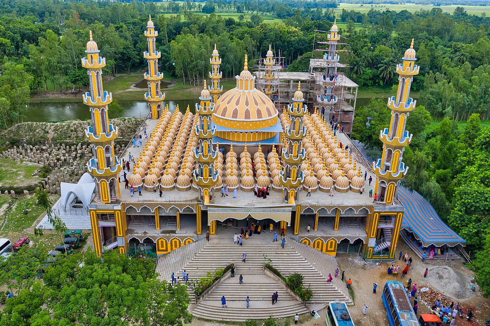

Lalbagh Fort
Lalbagh Fort Mosque, a grand Mughal structure, exudes historical grandeur and architectural beauty.

Ahsan Manjil
Ahsan Manjil, the Pink Palace of Dhaka, showcases exquisite artistry and is a cultural icon.

201 Dome Mosque
81 domes, stunning terracotta art - 201 Gombuj Mosque is a masterpiece of Bangladeshi architecture.